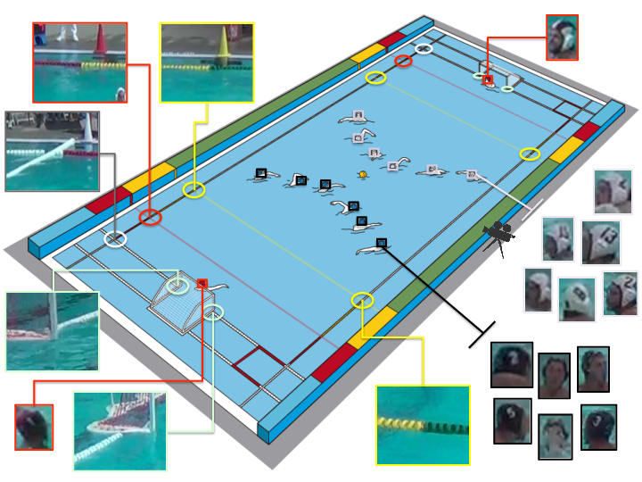
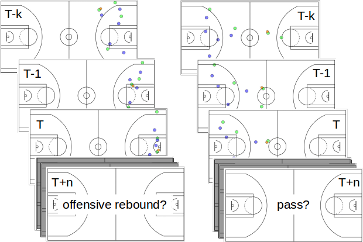

What will Happen Next?
Forecasting Player Moves in Sports Videos
|
|
|
|
|
|
Abstract
A large number of very popular team sports involve the act of one team trying to score a goal against the other. During this game play, defending players constantly try to predict the next move of the attackers to prevent them from scoring, whereas attackers constantly try to predict the next move of the defenders in order to defy them and score. Such behavior is a prime example of the general human faculty to make predictions about the future and is an important facet of human intelligence. An algorithmic solution to learning a model of the external world from sensory inputs in order to make forecasts is an important unsolved problem. In this work we develop a generic framework for forecasting future events in team sports videos directly from visual inputs. We introduce water polo and basketball datasets towards this end and compare the predictions of the proposed methods against expert and non-expert humans.
Paper
Paper is available at: [pdf]
Data
|  |
We provide water polo and basketball datasets along with detailed annotations and human performance metrics as a benchmark for prediction tasks. We will provide link to this dataset soon.
Basketball
|  |
Predicting the ball location is just one out of many events of interest. For example, whether a teammate would screeno r whether dribble or a break would take place are of great interest in basketball. In a manner similar to predicting where the ball will be at times {t + 1, t + 2}s, we also predict which out 16 events of interest will happen in the future.
Acknowlegements
We thank James Graham, of the University of the Pacific, for providing the
water polo game film. We thank Saurabh Gupta and Shubham Tulsiani for helpful
discussions. This research was supported, in part,
by Berkeley Deep Drive sponsors, and ONR MURI N00014-14-1-0671.
Website Template
The template for this website has been adopted from Carl Doersch.
Contact
For comments/questions, contact Panna Felsen or Pulkit Agrawal.